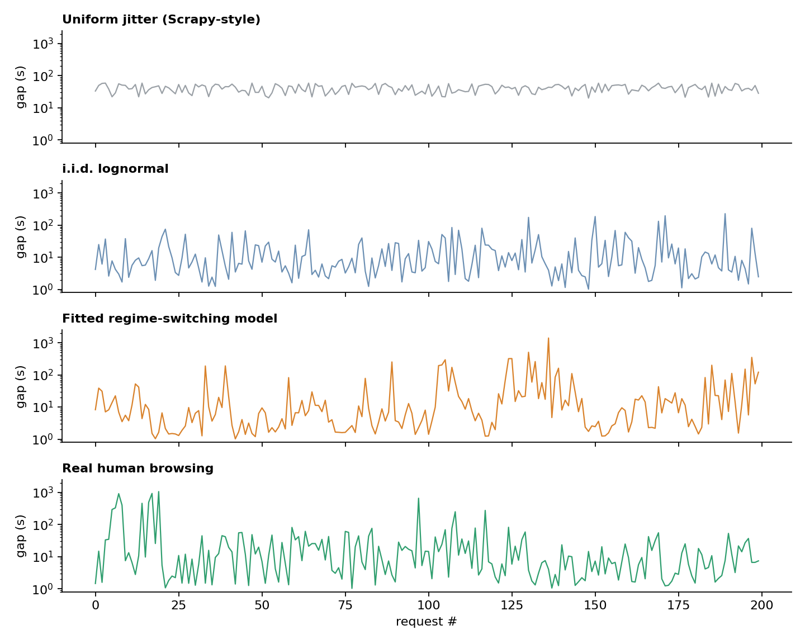
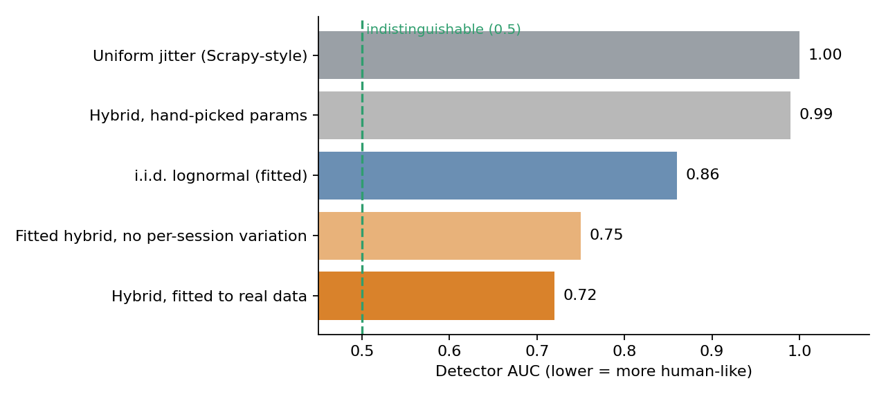

Why Random Delays Aren't Human: Modeling Request Timing for Scrapers
Almost every scraper I've seen has some version of this line in it:
time.sleep(random.uniform(1, 3))
The idea is to not hammer the server, and not look like a machine firing requests on a fixed clock. But "random" and "human" are not the same thing. A uniform sleep has its own very recognizable shape, and in some ways it's easier to spot than no delay at all.
That got me wondering: what would it actually take to make the timing of requests statistically indistinguishable from a person clicking around? And more importantly how would you even check?
The short version: the right structure gets you a long way, but only if you fit it to real data. My first, hand-tuned model did worse than a much simpler one fitted to real data and that was one of the most useful lessons of this whole experiment.
Why timing, and why only timing
Modern bot detection leans on a lot of signals and request timing is one of the weaker ones. Things like TLS and HTTP/2 fingerprints, JavaScript challenges, IP reputation and mouse/scroll telemetry usually matter far more. A perfectly human-looking delay won't save a scraper that fails any of those.
So this isn't really a "how to beat bot detection" post. It's just a narrower, fun question I found interesting on its own: how do you generate a sequence of waiting times that has the same statistical character as human behavior? This problem also shows up in load testing, synthetic traffic generation and crawl scheduling. Basically, anywhere you want traffic that looks like people rather than a metronome.
I deliberately isolated this one variable. Keeping this experiment narrow made it possible to actually measure something tangible instead of hand waving about "stealth scraping".
The usual approach and what's wrong with it
The step up from a uniform sleep is usually a lognormal delay, typically generated with the Box-Muller transform. The lognormal is a good choice for a single delay: most waits are short, a few are long, and it can never go negative. Individual human dwell times really do look roughly like that.
The problem isn't really the shape of any one particular delay. It's how all the delays relate to one another. Each can be drawn independently which then causes three giveaways:
- No memory. Knowing the last delay tells you nothing about the next one. We skim a few pages quickly, then settle into reading something then wander off to get coffee. Human timing comes in bursts and lulls.
- Every session is the same person. The same parameters every time means thousands of sessions with identical pacing. Real users differ from each other and the same user differs day to day (I am a different man once I have had my coffee).
- Hard caps leave a fingerprint. Clamping delays to a maximum with
min(delay, t_max)piles up probability exactly att_max. A simple statistical test finds that spike instantly.
Two ideas help describe what's missing. Burstiness measures how clumpy a sequence of events is: around -1 for a perfectly regular clock, 0 for purely random timing, and positive for bursty human-like activity. Autocorrelation measures whether a long wait tends to be followed by another long wait. An independent lognormal has zero autocorrelation by how it's designed.
What I built
I used Box-Muller since it's a good way to generate Gaussian random numbers and built the structure around it in layers:
- Session layer: each session gets its own slightly different pace so no two "visitors" are identical. Mimicing the fact that no two people have the same browsing behaviour.
- Regime layer: a small Markov chain switches between browsing modes like scanning, reading and idle. Modes tend to persist, which naturally produces bursts and lulls.
- Within regime: a lognormal delay per browsing mode with the reading time scaled to how much content is on the page and a heavy-tailed idle mode for the occasional "left the tab open" gap.
- Bounds by redrawing: if a delay falls outside the allowed range draw again instead of clamping. This means no spike at the edge.
On paper this looked great. Compared to an independent lognormal it was bursty, it had memory, and it had a realistic long tail. But every initial parameter in it was my guess. Reasonable guesses in my head, but they were still just guesses.
Which raised the real question: compared to what?
How I tested it
To know if something looks human, you need human data. I used about three months of timestamps from my own browser history but only the times of page visits. After removing redirects, reloads and embedded frames and merging sub-second bursts into single actions that left roughly 46,000 navigations split into about 560 browsing sessions.
It's an imperfect proxy since browser history mixes all open tabs into one stream and it's just my data, 1 person but still it's real data and far better than tuning against my own guess work instead.
I compared five generators against this data:
- Uniform jitter, the way Scrapy randomizes delays (0.5-1.5× a base delay), with the base set to the real data's average gap so the average pace matched
- An independent lognormal, fitted to the real data
- My layered model with hand-picked parameters
- The layered model with its regimes fitted to the real data
- The fitted model without the per-session variation to see if that layer mattered
Summary statistics are useful, but they're easy to game since you can match a median and still look nothing like a person. So the main test was adversarial: I trained a detector (a gradient-boosted classifier) to look at windows of 20 consecutive delays and decide "human or generated". Its score is the AUC: 1.0 means it can always tell them apart, 0.5 means it's reduced to a coin flip. For a generator, lower is better.
This is a deliberately tough test. The detector was trained on the exact person the model is trying to imitate, which is more than any real website would have since multiple users would be trickier.
What happened


Uniform jitter was caught every time (AUC 1.00). No surprise since it has negative burstiness, meaning it's more regular than chance which is the opposite of how people behave.
The independent lognormal, fitted to real data, did noticeably better at 0.86. Getting the basic shape right buys you something.
And then my hand-tuned layered model scored 0.99 which was almost as bad as uniform jitter. The structure was right, but the numbers weren't. My guessed pace was nearly 3 times slower than real browsing, the memory faded too quickly and the sessions were too similar to each other. Moral of the story - A sophisticated model with wrong parameters was easier to detect than a simple model with right ones.
Once I fitted the regimes to the real data, the same structure dropped to 0.72 - the best of anything I tested. The fitted model found three natural modes: a quick one around 2 seconds, a middle one around 6 seconds, and a slow, very spread-out one around 30 seconds. Each tending to persist for about 5 steps before switching.
Two other findings stood out:
- Longer sessions are faster. Session length and pace were clearly linked. People clicking through many pages tend to do it quickly, they're usually in a rush. That's the kind of relationship you'd never think to hardcode, but it falls right out of the data itself.
- The remaining gap is about the shape of memory. Real behavior had weak short-term correlation but a pace that drifted slowly over long stretches. The fitted model had the opposite: too "sticky" in the short term, too little slow drift. I tried three fixes. Adding a slow drift term, reducing stickiness and tying pace to session length. None of them beat 0.72. Closing that gap maybe needs a different class of model entirely, something to look into.
What I learned
- Structure without calibration is just a more elaborate guess. It's very tempting to believe a model is realistic because it has all the right ingredients. The data disagreed. If you take one thing from this post: fit your timing model against real behavior before trusting it.
- Test against an adversary not a checklist. Matching the median and the tail felt like progress. A detector trained to find differences was far more honest about what was still wrong and it pointed straight at the remaining problem.
- Human timing is slow, and that's a real trade-off. Realistic pacing means tens of pages per hour per session, not thousands. For most large-scale crawling, careful rate limiting and respecting server signals matter more than lifelike pauses. Realistic timing earns its place when you need a small number of long-lived sessions, or when you're generating synthetic traffic for testing.
What I'd explore next
The results point to a few clear next steps. The most interesting is the remaining gap in how memory decays so maybe trying something like long-memory processes where the influence of the past fades slowly rather than exponentially to see if that captures the slow drift the current model misses.
I'd also want more than one person's data. Everything fitted here describes one user. A model meant to be shared should be fitted per person or to a population and then evaluated on people it hasn't seen.
On the practical side: an adaptive layer that slows down on rising latency or rate
limiting and honors Retry-After headers, then packaging the whole thing as a drop-in
middleware for frameworks like Scrapy and Crawlee, so it's easy to try without rewriting a scraper.
Final thoughts
I went into this expecting the interesting part to be the modeling work - Markov chains, heavy tails, layered randomness. But the actual takeaway was simpler and more humbling: my intuition about how people behave was measurably wrong and it took exploring my own data and an adversarial test to show me how.
Next time you write random.uniform(1, 3), it's worth asking: random compared to
what?